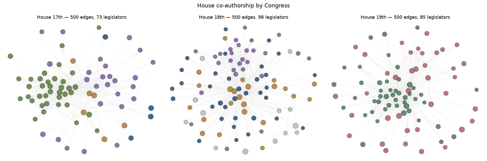
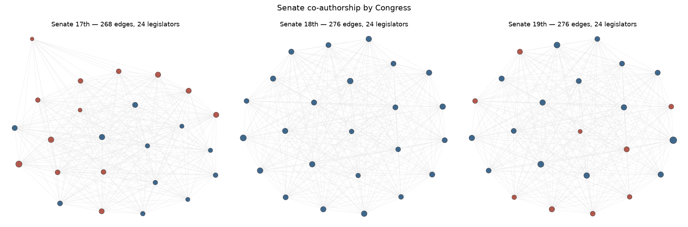

House
| Congress | Nodes | Edges | Modularity | Communities (n≥2) | Isolated |
|---|---|---|---|---|---|
| 17th | 301 | 40,391 | 0.095 | 4 | 3% |
| 18th | 305 | 39,755 | 0.054 | 4 | 6% |
| 19th | 316 | 39,873 | 0.097 | 3 | 6% |

Senate
| Congress | Nodes | Edges | Modularity | Communities (n≥2) | Isolated |
|---|---|---|---|---|---|
| 17th | 24 | 268 | 0.012 | 2 | 0% |
| 18th | 24 | 276 | 0.000 | 1 | 0% |
| 19th | 24 | 276 | 0.008 | 2 | 0% |

Caveat
Louvain runs independently on each Congress, so "community 3" in house-17 is not the same coalition as "community 3" in house-19, and colors carry no cross-panel meaning. The temporal comparison this page supports is counts and shapes: edges, nodes, modularity, isolated fraction, and the general pattern of connected vs. sparse.